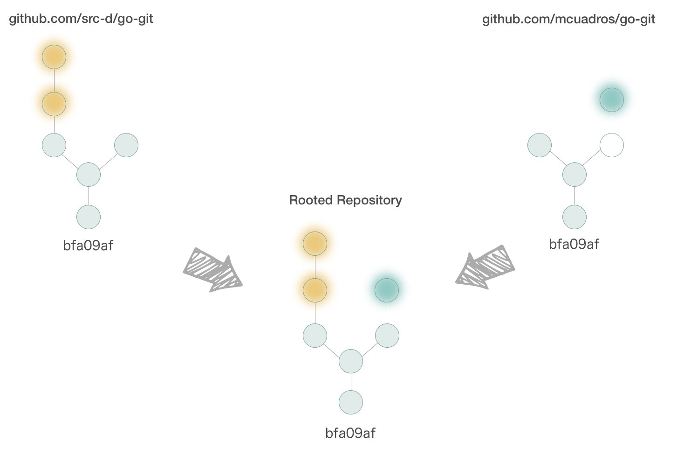

Public Git Archive
On this dataset you can find all the repositories from GitHub with more than 50 stars.
Links
Files explanation
Description of the content of each file type and explanation about some key concepts.
You can download and filter by csv data using multitool.
CSV with metadata per repository
A CSV with useful data per each repository on the dataset. The columns on the CSV are:
| Column name | Column description |
|---|---|
| URL | The url of the GitHub repository that allow us to access to the Github web interface. |
| SIVA_FILENAMES | List of siva filenames that contains one or more branches from that specific repository. |
| FILE_COUNT | Number of files on Commit pointed by default HEAD. |
| LANGS | List of languages contained on that repository on default HEAD. |
| LANGS_BYTE_COUNT | List of bytes count per each language contained on that repository on default HEAD. The order should be the same that LANGS column. |
| LANGS_LINES_COUNT | List of lines per each language contained on that repository on default HEAD. Ordered as previous languages counters. |
| LANGS_FILES_COUNT | List of number of files written in each language contained on that repository on default HEAD. Ordered as previous languages counters. |
| COMMITS_HEAD_COUNT | Number of commits on the history obtained by the commit pointed by default HEAD. The output is the same as git rev-list --count HEAD. |
| COMMITS_COUNT | Count with all the unique commits on all the siva files that contains this repository. |
| BRANCHES_COUNT | Number of references on that repository, excluding tags. |
| FORK_COUNT | Number of remotes on all the siva files on the subset that contains that repository. |
| EMPTY_LINES_COUNT | Number of empty lines on files on commit pointed by default HEAD. |
| CODE_LINES_COUNT | Number of lines with code on files on commit pointed by default HEAD. |
| COMMENT_LINES_COUNT | Number of commented lines on files on commit pointed by default HEAD |
| LICENSE | License of the repository |
SIVA files with rooted repositories
Siva files contains rooted repositories with all the git objects from the standard repositories. A rooted repository is a standard Git repository that stores all objects from all repositories that share common history, identified by same initial commit:

Using rooted repositories we avoid data duplication as much as possible.
To read siva files, you can use: